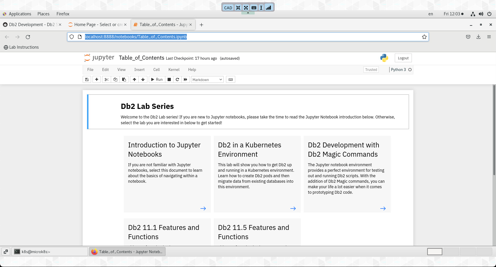

Refresh Db2 in a Kubernetes Lab
To refresh the Db2 Kubernetes lab, make sure that you are using the VM Console and have opened a terminal window.

Download the Latest Lab Contents
This will place the file into the Download directory of the k8s user.
Download latest notebooks
Recreate the notebook directory
sudo systemctl stop jupyter-notebook
rm -rf ~/notebooks
unzip ~/Downloads/notebooks.zip
sudo systemctl start jupyter-notebook
Update the Kubernetes Cluster Certificates
Switch to the Root user
sudo su -
Update Certificates in the Cluster
This command takes approximately 1 minute to complete.
microk8s refresh-certs
Exit from being the Root user
exit
Update local and remote connection settings
microk8s config > config
cp config ~/.kube/.
rsync -r config db2inst1@10.0.0.1:/home/db2inst1/.kube/
rsync -r config db2inst2@10.0.0.1:/home/db2inst2/.kube/
Install kubectl command
curl -LO https://dl.k8s.io/release/v1.20.13/bin/linux/amd64/kubectl
sudo install -o root -g root -m 0755 kubectl /usr/local/bin/kubectl
Remote User Updates
Connect to remote site
ssh db2inst1@10.0.0.1
Install kubectl command
curl -LO https://dl.k8s.io/release/v1.20.13/bin/linux/amd64/kubectl
sudo install -o root -g root -m 0755 kubectl /usr/local/bin/kubectl
Exit remote connection
exit
Open the Table of Contents
Open the Table of Contents
The password is kubernetes.
Your screen should like this.

Click on the Db2 in a Kubernetes Environment arrow to display the lab exercises for the workshop.